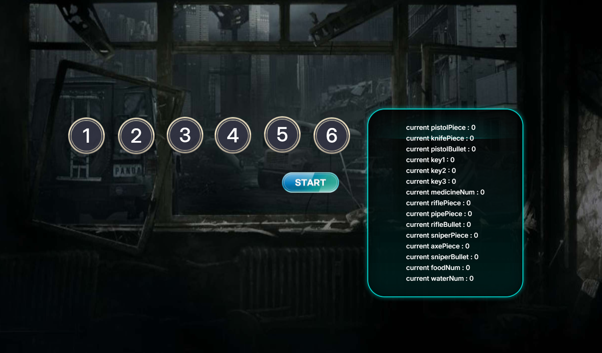
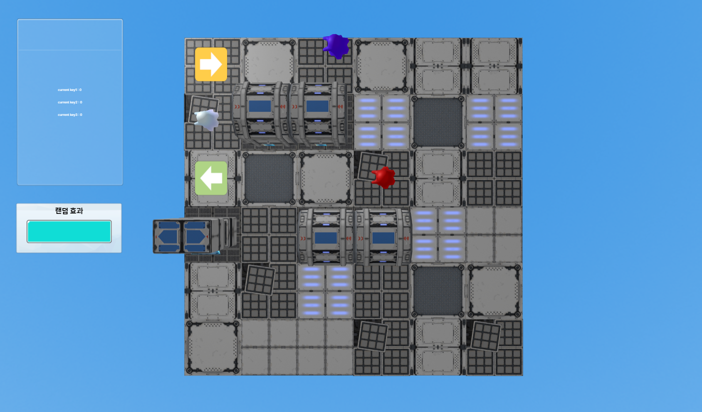

3개 게임이 데이터를 주고받는 합작 프로젝트. 본인은 캐주얼 생존 파트를 맡아, 외부 웹 게임이 보낸 건물 데이터에 따라 맵 컨셉·난이도·아이템을 자동으로 세팅하고, 플레이어가 획득한 아이템을 다음 게임으로 전달하는 시스템을 설계했습니다.
매번 다른 맵, 매번 다른 건물 컨셉, 그리고 다른 웹 게임과 데이터를 주고받는 연결성. 캐주얼하지만 시스템적으로는 꽤 깊은 구조를 시도했습니다.
고정된 맵이 아닌, 입장할 때마다 새로 구성되는 절차적 맵. 장애물 주변 예외 처리로 막힌 구조 방지.
외부 게임이 보낸 건물 번호에 따라 배경·난이도·아이템이 분기. 동일한 블록을 재활용해 컨셉만 갈아끼움.
아이템 확률·등장 횟수를 엑셀로 관리. 기획자·디자이너가 코드 수정 없이 직접 조정 가능.
아이템 매니저 · 적 매니저 · 중간 이벤트 매니저를 독립 모듈로 분리. 룰 변경 시 한 곳만 수정.
다른 웹 게임이 보낸 건물 번호로 맵 구성 → 획득 아이템 데이터를 저장 후 다음 게임으로 전달.
게임 중에도 룰·아이템 배치 방법을 동적으로 갈아끼울 수 있는 구조. 테스트와 라이브 튜닝 모두 용이.
같은 게임이지만 입장하는 건물에 따라 완전히 다른 분위기. 폐허·골목·빌딩 사이를 누비며 쫓아오는 적을 피해 아이템을 모으세요.


카카오TV에서 게임의 실제 플레이 영상을 확인할 수 있어요. (소리는 미포함)
쫓아오는 적, 매번 달라지는 맵, 손에 잡히는 아이템. 그리고 이 게임이 끝나면 내가 모은 아이템 데이터가 다음 게임으로 넘어간다 — 웹 게임끼리도 연결될 수 있다는 작은 실험.
여기서부터는 절차적 맵 생성, 매니저 분리, 엑셀 기반 밸런싱, 그리고 게임 간 데이터 통신 구조를 깊게 다룹니다.
웹 게임 엔진 Redbrick 위에서 절차적 맵 생성과 외부 데이터 연동을 구현. 브라우저 표준 API와 Redbrick 시그널을 함께 활용해 게임-간 통신 채널을 구성했습니다.
외부 게임 → 건물 번호 수신 → 맵 컨셉 분기 → 매니저들이 각자 역할 수행 → 결과 데이터를 다음 게임으로 송신. 시그널/postMessage 채널을 따라 데이터가 한 방향으로 흐르도록 설계했습니다.
// 1. 외부 게임 → RunToRoom (입장 시 건물 번호 수신) [External Game A] → Redbrick Signal { buildingId: 3 } → postMessage / LocalStorage ↓ [RunToRoom Boot] → SignalReceiver.on('buildingData') → MapGenerator.build(buildingId) ↓ // 2. 내부 시스템 — 매니저 분리 구조 MapGenerator → ItemManager // 엑셀 확률표 기반 스폰 → EnemyManager // 건물별 적 패턴 → EventManager // 중간 이벤트 트리거 ↓ // 3. 게임 종료 → 다음 게임으로 결과 데이터 송신 [RunToRoom End] → ResultCollector { items: [...], buildingId } → Redbrick Signal emit('survivorResult') → LocalStorage persist ↓ [External Game B] — 받아서 자기 게임에 반영
합작 프로젝트 중 본인이 맡은 캐주얼 생존 게임 파트에서 직접 설계·구현한 핵심 영역입니다. 각 영역은 서로 독립적으로 동작하지만, MapGenerator를 중심으로 하나의 흐름으로 묶여 있습니다.
건물 번호를 입력으로 받아 맵 컨셉·블록 배치·장애물 배치를 절차적으로 구성. 동일 prefab을 회전·재배치하여 6개 컨셉을 표현.
buildingId → 컨셉 매핑 테이블아이템·적·중간 이벤트를 각각 독립 매니저로 분리. 테스트 및 룰 변경 시 한 모듈만 수정하면 되도록 책임을 명확히 가름.
ItemManager — 아이템 스폰 / 회수 / 인벤토리EnemyManager — 적 스폰 · 추격 AI · 난이도 곡선EventManager — 중간 이벤트 트리거 · 보너스 페이즈아이템 확률·등장 횟수를 엑셀 시트로 관리하고, 게임 빌드 시 JSON으로 변환해 로딩. 코드 수정 없이 밸런스 패치가 가능한 파이프라인.
probability, maxCount, buildingFilterRedbrick Signal과 postMessage API를 함께 사용해 다른 웹 게임으로부터 건물 번호를 받고, 플레이 결과를 다음 게임으로 전달.
SignalReceiver — 외부 게임의 건물 데이터 수신ResultCollector — 획득 아이템 누적 · 직렬화LocalStorage 폴백 — 시그널 미수신 시 백업 채널실제 코드는 GitHub에 공개되어 있지만, 여기서는 설계 의도를 한눈에 보여주기 위해 핵심 인터페이스만 간추렸습니다.
// 건물 번호 → 맵 컨셉 매핑 + 매니저 초기화 class MapGenerator { build(buildingId) { const concept = this.resolveConcept(buildingId); // 1~6 this.placeBlocks(concept.layout); // prefab 재활용 this.placeObstacles(concept.obstacleRule); // 주변 예외 처리 // 매니저는 컨셉 정보만 받아 각자 초기화 — 결합도 최소 ItemManager.init(concept.itemPool); // 엑셀 → JSON EnemyManager.init(concept.enemyPattern); EventManager.init(concept.eventSchedule); } }
// 외부 게임 → 본 게임 (입장 시) / 본 게임 → 다음 게임 (종료 시) SignalReceiver.on('buildingData', (data) => { const id = data?.buildingId ?? LocalStorage.get('buildingId'); MapGenerator.build(id ?? Random.pick(1, 6)); // 안전 폴백 }); function onGameEnd(result) { const payload = { items: ResultCollector.serialize(), buildingId: Game.currentBuildingId, }; Signal.emit('survivorResult', payload); LocalStorage.set('survivorResult', payload); // 백업 }
합작 프로젝트, 처음 시도해보는 게임 간 통신, 그리고 인턴 기간이라는 시간 제약 — 각각의 문제를 어떻게 풀었는지 정리했습니다.
postMessage + LocalStorage를 폴백으로 구성. 시그널이 도달하지 않거나 늦더라도 게임이 멈추지 않고 랜덤 컨셉으로 안전하게 시작.
이 프로젝트는 인턴 기간 내 완성이 불가능한 규모였습니다. 3개 게임을 연결하는 합작 프로젝트의 한 축으로서, 본인은 캐주얼 생존 파트의 핵심 시스템 — 자동 맵 생성, 매니저 분리, 엑셀 기반 밸런싱, 게임 간 데이터 연동의 뼈대를 완성한 뒤 인수인계했습니다.
이후 작업자가 콘텐츠(아이템·이펙트·UI)를 채워 넣기만 하면 되도록 시스템을 분리해두었고, 코드 전체는 GitHub에 공개되어 누구나 참고할 수 있습니다. 미완성 빌드를 넘기는 대신 확장 가능한 구조를 설계하고 인수인계까지 마무리하는 워크플로우를 정착시킨 작업입니다.